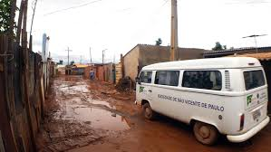

Title description, Dec 7, 2017 colocar aqui data automática
texto imagem 6
Confrades e Consocias, Seguem anexos Circular 003, do CM Brasília, desta data, modelo de Currículo e modelo de Declaração de Atividade Vicentina, relativos à Abertura ….
teste
Title description, Sep 2, 2017 este
texto..
Hoje percebemos a necessidade em atender os nossos mestres
e senhores, os Pobres, nas mais diversas formas de pobreza. Nossa principal
prática é o atendimento às famílias em seu domicílio semanalmente, mas
muitas ações têm sido desenvolvidas em favor nos nossos irmãos em
situação de rua, uma população que cresce demasiadamente em nosso país,
os quais têm por domicílio as calçadas, as marquises, os viadutos etc...
Com o olhar atento a essa realidade, atual diretoria do Consel.
About Me
testo referente a imagem 5
Popular Post
Image1
Follow Me 123
Some text 123..
>
missões pelo mundo
This image is floated to the right. It is also taller than the element containing it, so it overflows outside of its container:

Hoje percebemos a necessidade em atender os nossos mestres e senhores, os Pobres, nas mais diversas formas de pobreza. Nossa principal prática
é o atendimento às famílias em seu domicílio semanalmente, mas muitas ações têm sido desenvolvidas em favor nos nossos irmãos em situação de
rua, uma população que cresce demasiadamente em nosso país, os quais têm por domicílio as calçadas, as marquises, os viadutos etc... Com
o olhar atento a essa realidade, atual diretoria do Consel.Hoje percebemos a necessidade em atender os nossos mestres e senhores, os Pobres,
nas mais diversas formas de pobreza. Nossa principal prática é o atendimento às famílias em seu domicílio semanalmente, mas muitas ações
têm sido desenvolvidas em favor nos nossos irmãos em situação de rua, uma população que cresce demasiadamente em nosso país, os quais têm
por domicílio as calçadas, as marquises, os viadutos etc... Com o olhar atento a essa realidade, atual diretoria do Consel.Hoje percebemos
a necessidade em atender os nossos mestres e senhores, os Pobres, nas mais diversas formas de pobreza. Nossa principal prática é o
atendimento às famílias em seu domicílio semanalmente, mas muitas ações têm sido desenvolvidas em favor nos nossos irmãos em situação
de rua, uma população que cresce demasiadamente em nosso país, os quais têm por domicílio as calçadas, as marquises, os viadutos etc...
Com o olhar atento a essa realidade, atual diretoria do Consel.Hoje percebemos a necessidade em atender os nossos mestres e senhores, os
Pobres, nas mais diversas formas de pobreza. Nossa principal prática é o atendimento às famílias em seu domicílio semanalmente, mas
muitas ações têm sido desenvolvidas em favor nos nossos irmãos em situação de rua, uma população que cresce demasiadamente em nosso
país, os quais têm por domicílio as calçadas, as marquises, os viadutos etc... Com o olhar atento a essa realidade, atual diretoria
do Consel.vHoje percebemos a necessidade em atender os nossos mestres e senhores, os Pobres, nas mais diversas formas de pobreza.
Nossa principal prática é o atendimento às famílias em seu domicílio semanalmente, mas muitas ações têm sido desenvolvidas em favor
nos nossos irmãos em situação de rua, uma população que cresce demasiadamente em nosso país, os quais têm por domicílio as calçadas,
as marquises, os viadutos etc... Com o olhar atento a essa realidade, atual diretoria do Consel.
missão 2
Add the clearfix hack to the containing element, to fix this problem:
têm sido desenvolvidas em favor nos nossos irmãos em situação de rua, uma população que cresce demasiadamente em nosso país, os quais têm
por domicílio as calçadas, as marquises, os viadutos etc... Com o olhar atento a essa realidade, atual diretoria do Consel.Hoje percebemos
a necessidade em atender os nossos mestres e senhores, os Pobres, nas mais diversas formas de pobreza. Nossa principal prática é o
atendimento às famílias em seu domicílio semanalmente, mas muitas ações têm sido desenvolvidas em favor nos nossos irmãos em situação
de rua, uma população que cresce demasiadamente em nosso país, os quais têm por domicílio as calçadas, as marquises, os viadutos etc...
Com o olhar atento a essa realidade, atual diretoria do Consel.Hoje percebemos a necessidade em atender os nossos mestres e senhores, os
Pobres, nas mais diversas formas de pobreza. Nossa principal prática é o atendimento às famílias em seu domicílio semanalmente, mas
muitas ações têm sido desenvolvidas em favor nos nossos irmãos em situação de rua, uma população que cresce demasiadamente em nosso
país, os quais têm por domicílio as calçadas, as marquises, os viadutos etc... Com o olhar atento a essa realidade, atual diretoria
do Consel.vHoje percebemos a necessidade em atender os nossos mestres e senhores, os Pobres, nas mais diversas formas de pobreza.
Nossa principal prática é o atendimento às famílias em seu domicílio semanalmente, mas muitas ações têm sido desenvolvidas em favor
nos nossos irmãos em situação de rua, uma população que cresce demasiadamente em nosso país, os quais têm por domicílio as calçadas,
as marquises, os viadutos etc... Com o olhar atento a essa realidade, atual diretoria do Consel.
ossa principal prática é o atendimento
missão 3
Add the clearfix hack to the containing element, to fix this problem:
têm sido desenvolvidas em favor nos nossos irmãos em situação de rua, uma população que cresce demasiadamente em nosso país, os quais têm
por domicílio as calçadas, as marquises, os viadutos etc... Com o olhar atento a essa realidade, atual diretoria do Consel.Hoje percebemos
a necessidade em atender os nossos mestres e senhores, os Pobres, nas mais diversas formas de pobreza. Nossa principal prática é o
atendimento às famílias em seu domicílio semanalmente, mas muitas ações têm sido desenvolvidas em favor nos nossos irmãos em situação
de rua, uma população que cresce demasiadamente em nosso país, os quais têm por domicílio as calçadas, as marquises, os viadutos etc...
Com o olhar atento a essa realidade, atual diretoria do Consel.Hoje percebemos a necessidade em atender os nossos mestres e senhores, os
Pobres, nas mais diversas formas de pobreza. Nossa principal prática é o atendimento às famílias em seu domicílio semanalmente, mas
muitas ações têm sido desenvolvidas em favor nos nossos irmãos em situação de rua, uma população que cresce demasiadamente em nosso
país, os quais têm por domicílio as calçadas, as marquises, os viadutos etc... Com o olhar atento a essa realidade, atual diretoria
do Consel.vHoje percebemos a necessidade em atender os nossos mestres e senhores, os Pobres, nas mais diversas formas de pobreza.
Nossa principal prática é o atendimento às famílias em seu domicílio semanalmente, mas muitas ações têm sido desenvolvidas em favor
nos nossos irmãos em situação de rua, uma população que cresce demasiadamente em nosso país, os quais têm por domicílio as calçadas,
as marquises, os viadutos etc... Com o olhar atento a essa realidade, atual diretoria do Consel.